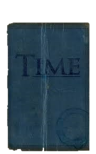

It was a particularly cold New Year’s Day in California. Jeff had set up a party at his home to celebrate with 4 of his closest friends, Frank, Julie, Susie, and Joey. They talked, had fun, and partied until the time was nearing 12:00. Jeff heard a strange noise coming from the upstairs bedroom. He went up to investigate and found one of his windows broken from the outside. He trembled with fear and tried grabbing anything he could to use as a potential weapon. What he didn’t know was that the intruder was standing right behind him. Almost instantly his world went dark, as he was stabbed between his neck.
Jeff wakes up on his couch, feeling groggy and checks the time. He is scared and surprised that the time is 11:31 on New Year’s Day.
He asked his friends. “Have you felt anything strange going on?”
“No, why do you ask?” Julie responded.
“I had a weird dream or something. It was around 12:00 and someone broke in from the upstairs bedroom window. I went to check it out but I got stabbed in the neck and I woke up here.” Jeff explained.
They all concluded that he probably passed out and had a strange dream. So, they decided to put it behind them and have fun. Again, around the same time, he heard a noise. This time, it was from the bathroom. He asked one of his friends to come with him just in case and Joey decided to come along. They find the window broken and see a note stuck to the mirror.
It read, “Welcome to our little game Jeff. You will be set free of this loop once you find me. You have 3 attempts to do so; make them count. Or else you and your friends will see their fate."
They both frantically ran back to their friends but Joey got shot by an arrow coming through the window. Jeff turns around to see a dark-hooded figure with a battered mask, that looks like it came from a masquerade ball. Jeff tried to look for any evidence as to who the figure could be but was interrupted by the figure.
The figure looked at Jeff and said, “2 attempts left, Jeff. Better be careful next time.” Then, an arrow flew right into Jeff’s head.
Jeff finds himself in the same place on the couch and the time is indeed 11:31 on New Year’s Day.
He runs up to Joey and struggles to speak, “ Joey--arrow-- shot--bathroom, 2 attempts-- mask.”
They try to calm him down and help find out what he's trying to say. Finally, Jeff says “Me and Joey went to the bathroom because the window was broken. We found a note stuck on the mirror saying that I had 3 attempts or we all die. Then, some guy shot Joey through the mirror with an arrow. He told me to be more careful and that I have 2 attempts before he shot me as well.”
They are in disbelief and think he’s trying to scare them. He struggles to find a way to tell them. Jeff opens up his computer and searches for any instances on this happening and if he could find any information to help him. He stumbles on a website but after clicking the link, it takes him to a puzzle. A piece of text states that this puzzle will decide his and his friend’s fate. He calls his friends and they work out the puzzle. Some of the questions scared the group, as it talked about their private life and they didn’t know how someone got that information. As they reach the end of the puzzle, which was more like a quiz, they are redirected to another webpage that congratulates all of them. The webpage also says that as a reward, the group gets a package behind the couch that will help them. Jeff reaches behind the couch and picks up a book. The book was large, and had a rough texture, like sandpaper. On the front it read, “Time-onomicon” Jeff was about to open the book when it suddenly sprang to life and was floating in the air.
The book had a demanding voice, and asked, “Bring me a relic of the past and I may help you fools.”
This freaked out the group and Susie said, “I’m starting to believe your time-loop story. This is freaky but cool.”
Joey asked the Time-onomicon, “What do you mean by relic of the past?” To which it responded with, “You must find that out yourself, Joey.”
Julie threatened, “Just open up you damn book or I will douse you in gasoline and burn you to ashes.”
The book taunted her but grew bored with them and said, “You guys are really unenthusiastic.” as it opened up to a page on time-loops and retaining memory; as if it knew about their troubles.
After several minutes of reading, they found a spell that could help retain memory after the loop. The group chanted, “Caputus Crepitus!” but nothing seemed to happen. Julie suddenly caught the smell of smoke and the smoke alarm started going off. They frantically separated to try and find an exit but the doors and windows had been barricaded. Through a small crack they could see the hooded figure standing outside, menacingly.
Again, the time is 11:31 on New Year’s Day. Jeff stands up and asks, “Who remembers the Time-onomicon and the burning house?”
“I do.” they all answered.
“Now, we need to devise a plan, this is our last chance.” Jeff commanded. The group all look at each other without a clue on what to do.
“What if we kill him?” Julie proposed.
“How so?” Susie questioned.
“We can set a trap or something like that and maybe we can catch him.” answered Julie.
“Cmon, be realistic, how would that work on someone?” Jeff replied.
Amidst all the bickering, no one realised that Frank and Joey were missing. They hear a muffled scream, coming from the backyard. Jeff, Susie, and Julie sprint and find Joey dead, with his head crushed.
“It's not safe in the house,” Jeff screamed, “We need to leave the area, NOW.”
The friends agree and get into Jeff’s car. They drive off to another friend’s home, but are greeted by their severed head instead.
“However it is, they know every move we make.” cried Susie.
“Look! There's a cop. Lets ask for help!” Jeff said, with a sigh of relief.
They park near his vehicle and the officer sees their petrified faces and immediately asks “What seems to be the problem kids?”
“Were being chased by some maniac that killed our friends! We need help!” Julie cried.
“Alright be calm and can you tell me anything about this man?” the officer asked.
“The last time I saw him he was wearing a dark hood and a slightly battered masquerade mask.” Jeff answered.
The officer asked. “Where has thi---” He was interrupted by a shot to the head.
He says as he loads another bullet into his gun, “Aww, too bad. Seems you’ve reached the end of your little journey.”
As if by instinct Jeff reaches for the officer’s gun and in an instant, shoots the hooded man’s gun-arm and then his leg. The figure falls to the ground with a loud thud and is unable to move. Jeff walks up to the figure and pulls off the mask and is stunned to see that it was Frank.
“Why?” Jeff said while crying.
Frank doesn’t respond and bleeds out on the cold concrete floor.
Again, the friends find themselves on the couch and the time being 11:31 on New Year’s Day. A knock is heard on the door, which Jeff responds to. When the door is opened, he doesn’t see anyone. Instead, there is a mask and a letter on the mat. Jeff looks around and sees Frank across the road, who disappears immediately when noticed. Jeff picks up the note and reads it; Happy New Year, Friend. From: Frank.